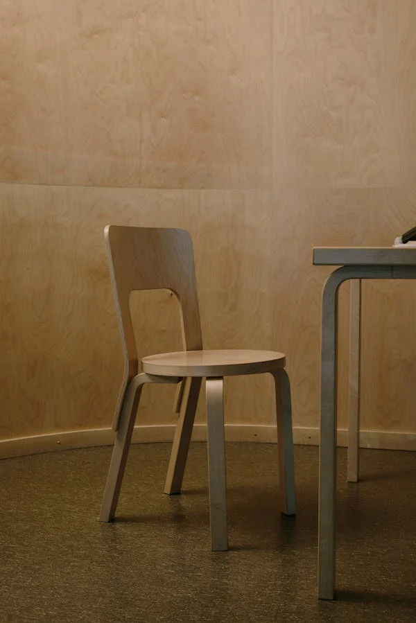

Sling Wooden Chair
RS 14,000
A sling wooden chair features a sturdy wooden frame with a fabric or leather sling seat, offering both comfort and style. Its design is often portable and versatile, suitable for indoor and outdoor use.
ADD TO CART
Classy Dark Wooden Chair
RS 8,000
A classy dark wooden chair exudes elegance with its rich finish and refined craftsmanship, making it a timeless addition to any decor. Often designed with intricate details, it combines comfort and sophistication for both formal and casual seatings.
ADD TO CART